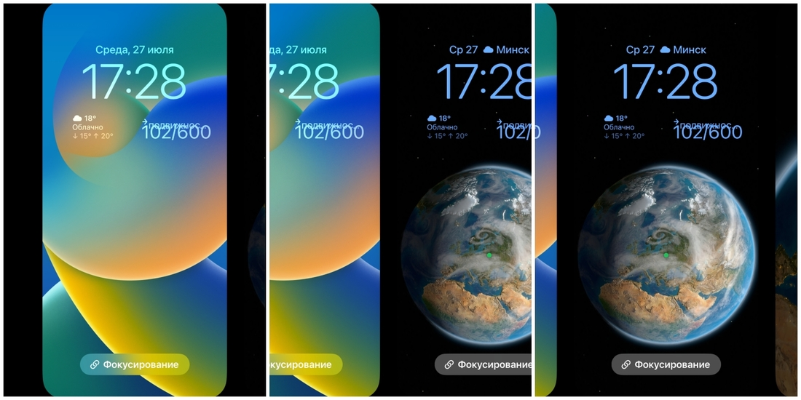

Экран блокировки
Больше всего заметных нововведений скрывается здесь. Apple решила немного сократить отставание от Android-конкурентов в том, что касается кастомизации.
Виджеты. Теперь экран блокировки — это не только время и обои. Отныне здесь есть три блока, в которых могут отображаться разные виджеты. Точнее, два блока, потому что средний всегда будет показывать время. Зато здесь можно настроить шрифт и его цвет.

В верхней части экрана — «плоский виджет». Например, дата, события, напоминания или погода в одну строчку. Под блоком с актуальным временем — место для двух виджетов покрупнее. Здесь же заметили баг с наплывом шрифтов друг на друга в фитнес-виджете.
Несколько экранов блокировки. Да, экранов блокировки может быть несколько — с разными обоями и разным набором виджетов. Менять их очень просто. Достаточно разбудить телефон и удержать палец на середине экрана — появится «карусель» с разными экранами блокировки, перемещаться между которыми можно боковыми свайпами.
Здесь же можно настроить каждый экран блокировки и добавлять новые. Отметим, что настроить можно только расположение тех или иных виджетов. Обои поменять можно только в основных настройках или если вы решили создать новый экран. В последнем случае вам сразу предложат начать с выбора обоев.
Анимированные обои. Здесь тоже большое поле для творчества. Можно выбрать что-нибудь из новых предложений. Мне, например, понравились обои с анимированной Землей. На экране блокировки планета показана с одного ракурса, а при переходе на рабочий стол видим красивую анимацию с перемещением ракурса. Есть подборки разных расцветок, с эмоджи, градиентами и геометрией. К слову, один из самых красивых эффектов — у оформления под названием Pride.
Кроме того, можно довериться подборкам фото из вашей галереи. Это могут быть запечатленные люди, здания или природа. Наконец, система может сама время от времени (ежечасно, ежедневно, при пробуждении или по касанию) менять обои из галереи по своему усмотрению или отобранные вами вручную. Не забудьте перспективу и размытие. Нюансы следующие. Судя по всему, система ограничивается где-то десятью первыми попавшимися снимками, которые потом постоянно показывает один за одним.
В одном блоке с обновленными обоями можно ковыряться час. Персонификация — на невиданном ранее для Apple уровне.
Уведомления. Наконец-то есть возможность показывать не сверху, а снизу. Так удобнее дотянуться пальцем. Группироваться они могут стопкой — у каждого приложения своя отдельная стопка уведомлений. Также может отображаться общее количество уведомлений. Или пусть все валится сплошным потоком как есть.
Другие полезные нововведения
Здесь выделим остальные новшества, которые не привязаны к экрану блокировки и оформлению, но которые выглядят интересно и полезно. Во всяком случае, ими я пользовался довольно часто.
Выделение объектов на фото. Пожалуй, самая впечатляющая штука, которая показывает всю мощь и возможности машинного обучения на деле, а не в теории. Функция позволяет выделить объект на фото, отделить его от фона и переместить куда пожелаете. Достаточно чуть задержать палец на сфотографированном объекте, как запустится анимация выделения. После этого объект можно скопировать в буфер обмена или сразу переслать куда захочется.
Конечно, срабатывает не всегда и не везде. Вы не сможете выделить отдельное деревце на панорамном фото леса. Если на снимке много объектов (например, общий фон в квартире), то тоже не получится. Это в первую очередь история про портреты и конкретные объекты, снятые крупным планом. Границы не всегда определяются четко и правильно, но все-таки в большинстве случаев функция работает чудо как хорошо. Можно стикерпаки лепить как из пулемета.
Поддержка русского языка в Live Text. Наводите камеру на текст, выделяете его и переводите. Теперь эта фишка работает с русским языком. И не только в видоискателе, но и вообще практически с любой картинкой (фокус можно провернуть и с иллюстрацией в Safari). Текст можно скопировать и вставить в документ. Помимо текста, распознаются также объекты вроде человека или машины. Здесь же — встроенный конвертер валют и физических величин.
Дубликаты фото. В галерее фото появился альбом «Дубликаты». В нем, как понятно из названия, содержатся найденные системой копии снимков. Можно их объединить в один объект. Сохранится снимок с лучшим качеством.
По-настоящему скрытые фото. Раньше в галерее фото был альбом «Скрытые», который при этом светился у всех на виду. Теперь в настройках этот раздел действительно можно скрыть — он не будет отображаться в «Фото».
Face ID в горизонтальном режиме. Еще одна долгожданная мелочь. Теперь не обязательно размещать телефон вертикально для разблокировки. Полезно, если смотрите кино, отвлеклись, экран погас, после чего нужно разблокировать устройство для продолжения просмотра видео.
Конфиденциальность. Вверху пункта управления проявился список приложений, которые недавно использовали геопозицию, камеру или микрофон. Если кликнуть, покажут чуть больше информации.
Spotlight. Встроенным в систему поисковиком теперь можно воспользоваться не только после свайпа вниз. Иконка Spotlight появилась внизу на месте трехточечного индикатора рабочих столов.
Пароль Wi-Fi. Еще одна мелкая, но порой полезная функция. Прямо в настройках Wi-Fi можно тапнуть на пароль — его покажут после проверки через Face ID.
Тактильный отклик в клавиатуре. То, что давно есть даже в самых бюджетных Android-смартфонах, но чего все это время не было на iPhone. Переходим в «Настройки» — «Звуки, тактильные сигналы» — «Отклик клавиатуры». Включаем там «Тактильные сигналы».
Процент зарядки. Теперь можно увидеть точный процент оставшегося заряда в значке аккумулятора — прямо как в Android-смартфонах, даже самых дешевых.
Остальное
Здесь перечислим не самые востребованные и полезные для многих пользователей изменения.
Очень много изменений в iMessage, которым у нас мало кто пользуется. Тем временем там появилась возможность отредактировать или удалить сообщение в течение 15 минут после его отправки. Среди других нововведений — SharePlay, восстановление удаленных сообщений, совместная работа, перемотка голосовых сообщений.
Вкладки в Safari. Изменили дизайн вкладок, позволили делиться группами вкладок с друзьями, а также закреплять вкладки в группе вкладок.
«Дом» и Siri. Приложение «Дом» получило обновленный интерфейс и стало более толковым. Впрочем, до конкурентов все равно далеко. Siri обучили нескольким новым фокусам вроде сброса звонка по команде.
Почта и Музыка. Почтовый клиент научился отменять отправленные письма, а также позволяет планировать отправку на конкретное время. Чуть ближе к Gmail. В Apple Music — обложка на весь экран блокировки и подписка на обновления конкретного музыканта или группы.
Есть еще несколько десятков совсем мелких нововведений, с которыми, скорее всего, большинство владельцев iPhone даже не столкнутся.